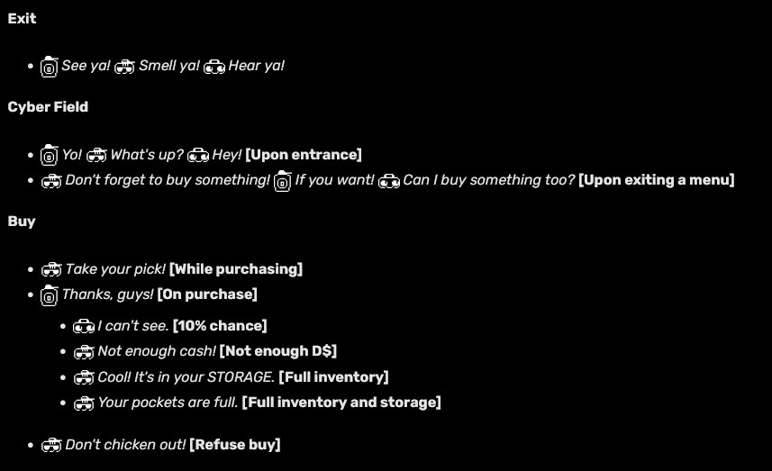

Major Theories
Note: While there are many religious inferences and parallels in Deltarune, I tried to mostly list ones that I feel are likely to have story implications. As Gaster is clearly a reference to the 22 revelations, I feel most of these are the strongest.
The Deltarune: When defining Delta, Google says:
Just about all of that could apply to Deltarune’s story couldn’t it? The Deltarune seems to be something that lets you, the player, break the 4th wall, by communicating in a game that plays heavily with the ideas of duality and differences. The deltarune symbol itself can represent an angel descending from the sky, but when flipped upside-down could appear to be a person wearing a crown. Therefore, we must be prepared for everything in Deltarune to be interpreted two ways.
However, I believe there is another way to interpret the delta in delta rune. Given the game’s obsession with trios, why is it that the Delta rune seems to imply a 4th?
The Unholy Trinity: CH.4 We see Gerson refer to Susie not as a hero, but as “the dragon.”
CH4 takes place in a church, the religious connotations couldn’t be more clear. Satan is described as a dragon that tempts Christ (Kris) to oppose god (Carol+You), turn stones into bread (bring darkners to life or sacrifice them), to fall from heaven and worship satan as king. This would explain the crown and horns over Susie’s door and furniture.
The unholy trinity consists of the false prophet / beast of the earth (Ralsei), the great dragon (Said to have seven faces) / Satan (Susie), and the Antichrist (Dark World Kris) aka the Beast of the Sea. When Carol is seen in CH4 it plays a song labeled in the ost merely as “C.” (Interestingly, the same label for Chara’s music in UT with many parallels)
Get it? When Kris is in the dark world following Carol’s orders, they’re “The Beast of the ‘C.’” Alternatively the “Beast of the C” is Dess, their purpose would be to replace Kris.
I believe Susie’s role in the future will be to tempt Kris as her wish to keep the dark world alive gets stronger. In the dark world, Susie is satan, the great dragon and a king indirectly worshipped by all. But in the light world, she is ashamed of her tail and monster-like attributes. In fact, her storyline may be a reference to the Land of Toys in Pinocchio, where indulging too much leads to a disease transforming them into donkeys. (Aka an ASS) Perhaps that’s why Susie also wants to find homes for Darkners, as a reference to Santa being an anagram for Satan.
{kind=link}
The false prophet is described as a gentle lamb with two horns and speaks like a dragon. Their goal is to create false signs to make people worship the Antichrist. The false prophet is also said to be able to make statues come to life. Ralsei seems hesitant to explain the true rules as to why darkners turn to stone. Most likely because he has something to do with it. His prophecy encourages You and Susie to challenge the angel’s heaven and seal the fountains.
The Holy Trinity: CH4 we see Kris collaborating with Carol. Given their reluctance in the weird route, I believe this is likely against their will. The conversation between Suzie and Noelle even mention sometimes when Kris talks it sounds like their voice is coming from a speaker.
Viewed from this context, the weird route seems even more disturbing. Carol is telling Kris to do unspeakable things to her own daughter. Given this chapter takes place in a church, I believe Carol’s Deltarune could be representing Kris as the son, and Noelle as the Holy Spirit. After all, Deltarune loves its trios right? “the Holy Spirit proceeds from the Father through the Son” In this case the Father would be Carol. Notice the word “proceeds?” Feels like we’ve seen that before…
The Son, The Father and The Holy Spirit are said to each have their own will, but all align with God. (The Player’s will). The Son (Kris), being a form made by god meant to walk among their own creations.
If the player is meant to represent god, that would mean they are the center of the trinity. The 4th entity, the Deltarune.
You are God: In the center of the Holy Trinity is God. God’s will is absolute, despite each part of the trinity having their own will. The end credits of CH4 see a narrator asking “How much longer is it now? My Deltarune.” I believe the narrator could be speaking to the symbol of their worship, the player aka God at the center of the holy trinity. The one whose actions decide everyone’s fate. The Deltarune is a holy script that describes the events you see, but one that can be changed or interpreted multiple ways.
Since you are god, you can choose to ignore Kris’ will and continue down the weird route which Kris has repressed in their memories, perhaps with the hope you will never find them. Most likely Susie and Noelle will both become an angel, and a dragon. These events are heavily foreshadowed in many scenes:
Trefoil: In CH1 every character has 3 weapons, all except Kris who has an unused 3rd item named the “Trefoil.”
The description of the trefoil in game files reads as follows: “Covered in green clovers and rainbows.” While the Dark World text mentions “moss.” Implying the sacred moss you eat in the dark world could be clovers.
Funnily enough Noelle comments when you equip it saying “What do you mean Unused!?” At first glance this seems like a gag, but also references Noelle’s uncanny ability to break the 4th wall and glitch games. Noelle’s soul is red like yours. She too has the ability to peer into the boundaries of her reality. But could the word “Unused” be referring to something more?
UNUSED Lines: Toby Fox states Deltarune only has one ending, but there’s something “more important than getting to the end.” I believe that something more important is saving someone trapped in darkness in the game’s files. Gerson may also be hinting at it in this dialogue:
One particularly striking script is someone speaking to us labeled “UNUSED.” Whoever it is seems to be trapped, without feel, without touch, only the sound of “scratching.”
It’s hard to tell who this could be, but I strongly believe this is Dess. Especially with all the hints given on the website. Whoever they are, I believe they are someone Kris wants to save, before they get “USED UP.”
The scratching sound could be a reference to Carol “banning music” in Ch.2, or Kris’ pencil writing a story asking us to save Dess. However Kris has stashed certain memories to the back of their mind, and they don’t “know where.”
Assembling Dess: A potential 3rd route could involve helping Kris “Remember December,” something that seems painful for Kris. This would explain the constant reminders that Kris “Don’t Forget.” It might be that the player will have to write code that brings Dess back, and UNUSED SLASH UNUSED is an anagram for a hint that could help us do so. There’s so many anagrams that could fit the name “Dess” in there I’m still trying to find them all.
Given that Deltarune has multiple exe files and added the functionality to launch different executables in-game, this doesn’t seem too far off. Perhaps we’ll get a way to make our own chapters and share them on the internet. Collectively, you will create Dess. You might even say to save Dess, you must “Dess-Assemble” the game.
December then will be what all the players imagine her to be, she is what the player feels December is to them. This might be why Sans calls them “That antlered girl and her big sis.” December doesn’t necessarily have to have antlers or be a monster at all, she could even be human, and take on the human vessel. This is why Kris could be so attached to her, she might have been the only other human Kris could connect with.
This would also be a great callback to the Ch3 ShadowMantle game being an imitation of the original Zelda. In order to get to the secret save screen you would need a second controller. Perhaps in order to get there in DR you will need a second SOUL to control Dess.
The Forgotten Man(Hole): In CH2 and 3 there are manholes specifically to help you with parts of the game related to the weird route. Following the name theming of Mancountry, I believe these manholes are left behind by “The Man” who is giving you eggs. So what are the manholes? One explanation is that they are Kris remembering a secret, a secret “Manual.”
They’re usually found by doing extremely offbeat things, and in some ways explain to Kris, or you the player, how to execute the weird route. Meeting the man in Ch.3+4 also all seem to hint that Kris used to photocopy or trace things like fake cards, tickets, etc. In order to see the rooms you must admit you are a cheater, that you “took and made, took and made, traced over and over.” A reference to Kris maybe retracing their steps, to give the player a secret manual.
Kris is trying to remember what the “Tree” looks like. This could represent the actual “tree” of decisions to reach the correct ending, or it could be another pun on the word “Manual” (Man-Yule), as in a yule tree. Either way, I think this might hint that Kris not only can play the piano, but also might have a photographic memory and uncanny ability to trace things. You might even say they are extremely “patient.”
Note: This could perhaps be why it’s so traumatizing for Kris who can’t forget things to the point they must repress them.
Ch3 has us going through a game resembling the original NES Zelda. Famous for coming with a manual that could explain not only the story behind it, but the secrets of the game itself. This could be referenced when the ink is difficult to wash off Kris’ hands. Oil-based ink used in offset printing is more difficult to wash off than water-based ink.
Someone’s Blindness:
Deltarune feels like it’s full of foreshadowing. Dark worlds themselves might even be a pun on “for shadow.” We might see who this person is in Chapter 5, on the night of the festival. Remember one of the first things Susie said to Kris? “How do you feel about losing your face?”
There’s also the werewires and the many references to chara’s face in UT including this newsletter: https://deltarune.com/icee/
While we don’t know who lost their face, doesn’t it sound an awful lot like UNUSED? Someone who can only see pitch black. This might explain why Kris feels the need to follow Carol. They want to build a new body for someone who they may have wronged.
Ch.4 Has more references to someone in the game being blind. With many parts of the chapter representing darkness and relying on acoustic senses.
We can actually see this hinted at as far back as chapter 2 with the robots representing three senses:

Someone who is blind would simply always be in darkness. Perhaps this is what happened to Dess, especially if you replace Noelle in this dialogue with Dess:
This feels like it could be Carol’s memories quite literally after Dess went missing. Clipping into a wall somewhere? Wasting away? The CH4 church fountain also is likely Dess’ fountain. And the egg room has us drawing a tree inside a pitch black therapy room, which we find by clipping into a wall. Which would mean… Dess’ name is a play on the word “DarkNess”
Combined with “The girl with Hope crossed on her heart” in the prophecy, I believe Dess may somehow be involved. The immediate phrase that comes to mind is “Cross My Heart, Hope To Die, Stick a needle in my eye.” Deltarune has a penchant for twisting religious nursery rhymes…
Interesting to note, when Berdly’s arm is hurt in the Dark World, he can no longer feel it in the light world. Implying that the Dark World has something to do with impairing your senses. Was Dess blinded inside a dark world?
Noelle’s Basement: In Ch2 the basement had a “pool of battery acid” powering Queen’s Mansion. What could the real world Noelle’s basement have? I think it’s Determination. This would explain Kris’ trauma in CH.3:
After what Kris thought was a harmless bath bomb prank, living bath bombs started “crawling out of the pipes.” After all, where else would the bath bombs go but to the house right downhill? Dipped into determination, they then started crawling out of pipes everywhere, injected with the will to live.
Interestingly, while you’re in what seems to be Noelle’s basement in CH4, there are a ton of christmas present boxes blocking your view and Gaster noises play. The mascot costume is also potentially hiding a switch.
We even get confirmation that Asgore works for C as a housecleaner, and Suzie and Noelle joke about severed hands in the basement. Sounds an awful lot like the gags in Ch2!
Gaster’s Research on SOULS: In Ch.3 we get this library book:* (It's a book about Monster Funerals. Read it?)
* ... When monsters die, their dust will be spread over what they loved.
* An object that symbolizes their existence. That object will be buried...
* And in such a way, their soul be able to rest, within that object, and the earth.
This lends more credence to titans being amalgamations buried in the Earth. Amalgamations happen when you inject determination (Will in DR) into monsters, melding them together. In weird route ch.4 we also see our first glimpse of a monster soul, and it’s Noelle’s rose. Which is red like yours, maybe further proving determination has been fed to her. Though it was removed, I think it’s interesting to think that monster souls in Deltarune could all be some breed of flower. Maybe Susie is a cactus?
The Inverted Mark of The Beast: On UT’s 9th anniversary we got this letter. The significance of 9 has some implications. Rudy is a reference to Rudolph, the 9th reindeer. Gaster’s stats are 6666, but flipped could also be 9999. I believe this also plays into Deltarune’s themes of duality. The ability to view birth, and therefore death, as positive or negative. Toby even asks us whether the letter made us feel happy or sad.
We can assume then that 9 may show up more. We have two trinities, but what if there’s a 3rd? What if Gerson is raising Susie to be “the dragon” on purpose? The prophecy talks about three heroes but it seems clear that Susie isn’t one of them. What if it’s not a prophecy at all? Gerson states he couldn’t finish his tale, and hoped “the youth” would pick it up.
While it sounds like he’s referring to the party, I believe he’s talking about his son Alvin. The one that Gerson asks you to deliver the letter to. The prophecy in CH4 could then refer to three completely different heroes. Such as adventures Gerson had in the past with Carol or Asgore. If Suzie or Noelle awaken then, the heroes meant to stop them aren’t who we think at all, but maybe Carol, Alvin and someone else. After all, it's clear Gerson knows Susie is not the hero.
Girl Crossed With Hope: Hopes and Dreams are mentioned a lot in Deltarune, but often they are mentioned as if in diametric opposition to each other like in the legend of Deltarune: “It was a LEGEND of HOPE. It was a LEGEND of DREAMS.” followed by “It was a LEGEND of LIGHT. It was a LEGEND of DARK.”
This seems to imply that Hope is associated with Light, while Dreams are associated with Dark, and the Dark World sort of corroborates this, while Gerson’s white pen of “Hope” seems to imply Hope shelters you from “the dark.”
* ("Hope comes to those who believe. And for those that cannot...")
* ("... May our hope shine so brightly...")
* ("... That they, too, may keep shelter from the dark.")
Given that the prophecy was found in the church, and knowing that Kris could not even change it with the shadow crystal, it might imply Father Alvin or Gerson wrote the prophecy too. Hope being an allegory for faith, and representing the Noelle angel route.
Carol has pretty severe parallels to Chara. Both sharing a music theme named C, talking with red text, and being associated with violent / disturbing routes. Carol seems to also be okay with surrendering her daughter to you for some purpose, and we get a glimpse of that purpose here: https://www.youtube.com/watch?v=VExcTRjssi4
The line “Thank You.” could be a reference to when Chara is revived in UT. This line is also referenced on the website here after filling out a form with your email, a reference to Chara taking on your name in UT. Remember that in UT Chara and Asriel also once possessed the same body but Asriel resisted.
The screen then flashes red like when Chara is taking over the game, as if Carol is trying to help you revive them. There’s some pretty other striking parallels here. Monsters in UT say because of Chara “The Underground was full of Hope.” It also seems to be implied that Chara arrived at the end of 201X, aka December. Kris has also been referenced as trying to summon a demon and Chara is self-described as “The demon that comes when people call its name.”
“Hope crossed heart” then could mean something pretty sinister. Almost as if HOPE in DR could be interpreted as something else. (Hatred Of People Eternal?) Interesting to note that while Deltarune has many religious references, there are very few “crosses.” Which could mean X or “White Eggs” are sneaky euphemisms for the actual religious symbolism. Or it could just be a silly pun on “X Marks The Spot.”